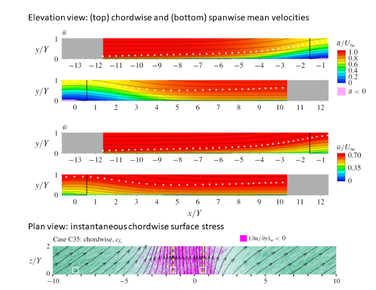

|
Langley Research CenterTurbulence Modeling Resource |
DNS: Swept Turbulent Separation Bubble
Return to: Data from DNS - Intro Page
Return to: Turbulence Modeling Resource Home PageThe data on this page were provided by G. Coleman.
This flow is a swept
separation bubble, with the separation and reattachment forced by velocity transpiration
along the top boundary. This is similar to the flow in
DNS: 2-D Turbulent Separation Bubbles, except the current flow
includes sweep. The flow was computed
using the incompressible Navier-Stokes equations in a pseudo-spectral code.
Additional details concerning the data,
code, and computational methodology can be found in:

Here is an explanation of what is in the data files provided:
The DNS data files are given here:
Return to: Data from DNS - Intro Page
Recent significant updates: Responsible NASA Official:
Ethan Vogel
08/12/2020 - revised README file to v4 (gives more precise values for Vmax to impose top-wall transpiration profile)
Page Curator:
Clark Pederson
Last Updated: 11/05/2021